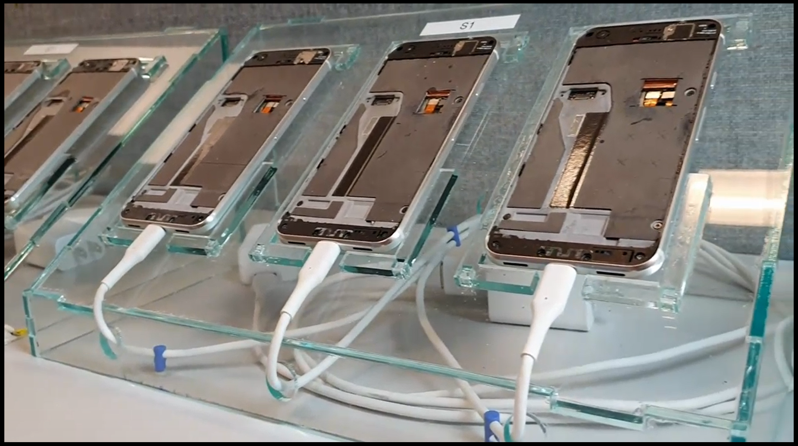
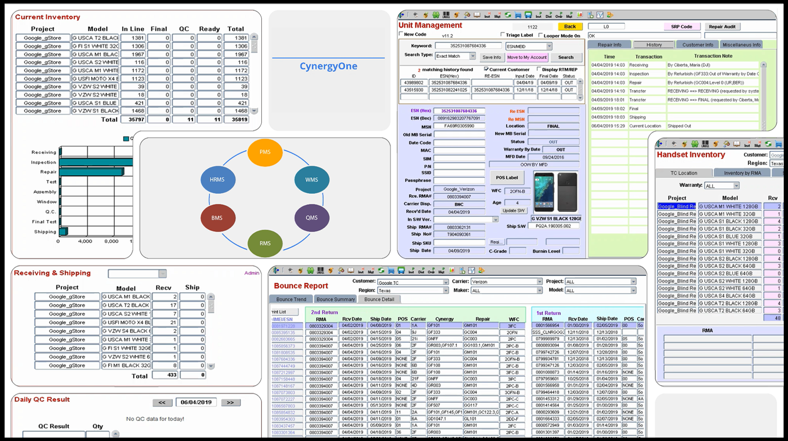
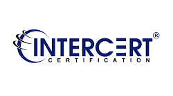

Quality Policy
Cynergy is committed to strive to meet or exceed the requirements and expectations of our customers in order to promote customer satisfaction and provide the best possible value through reliability, efficiency, and technology. We are committed to compliance with our Quality Management System and its continual improvement by using controlled processes, data, decision-making and analysis, which are its foundation.
See more...
Close
Quality Policy
Cynergy is committed to strive to meet or exceed the requirements and expectations of our customers in order to promote customer satisfaction and provide the best possible value through reliability, efficiency, and technology. We are committed to compliance with our Quality Management System and its continual improvement by using controlled processes, data, decision-making and analysis, which are its foundation.
The Cynergy quality management system and employees emphasize, embrace, and influence quality in all areas of customer satisfaction. Our engineers develop work instructions and create in-depth training that ensures finished products meets all pre-established service needs, while the IT system uses the latest technology to bring value and efficiency to our customers.
The key to our successful on-time product completion is doing the right job the right way, the first time.
|

Capability
Cynergy is an exceptional, electronics service provider specializing in the provision of warranty services, re-manufacturing, and repair of electronic devices across a broad spectrum of manufacturers and their product retailers. The scope includes incoming triage, disassembly, repair, assembly, testing, packaging, shipping, RMA fulfillment, and the warehousing of customer-owned electronic technology and materials.
See more...
Close
Capability
Distribution/Fulfillment
- Order Management
- Inventory Management
- Kitting
- Rebranding/Software Updates
- Individual order fulfillment
- Bulk Order Fulfillment
|
Reverse Logistics – Warranty Service
- RMA Management
- Bulk Refurbishment
- Complex repair
- Same Unit repair and return (End User)
- Bulk repair, SWAP and return (Carrier)
|
Asset Recovery
- Component Procurement
- High value components
- LCM Refurbishment
- Cosmetic components refurbishment
- Handset recovery
- End-of-life handset and component management
- Customized Sales and material disposition
- Sales & Revenue Sharing
|
Engineering
- Complex repair & Failure Analysis
- Customer experience evaluation
- Design for Serviceability
- Call centers support and training
- Solving hard-to-reproduce customer problems
- No Fault Found Reduction
|
Customer DATA Analysis
- Consumer Data - Point of Sale data collection
- Custom Coding for Analysis
- POS, Symptom and Repair Code integration
- Service component, Repair Code and Integration
- Inventory Management
- Product Design and Process Improvement
- Billing and Invoicing Accuracy
|
IT Systems
- Customized Reporting
- Custom Dashboards for real-time information
- Custom RMA portal for Contact Centers (End User RMA Generation)
|
|

Responsibility
The adaptation of SMART business goals and utilization of ISO has defined the repair process flow and the continual secure handling of electronic devices. Cynergy also uses forced routing for effective management of electronics throughout the repair and assembly processes. This eliminates process bottlenecks, allows for the forecasting of parts, and optimizes work schedules.
See more...
Close
Responsability
The adaptation of SMART business goals and utilization of ISO has defined the repair process flow and the continual secure handling of electronic devices. Cynergy also uses forced routing for effective management of electronics throughout the repair and assembly processes. This eliminates process bottlenecks, allows for the forecasting of parts, and optimizes work schedules.
Cynergy has a real-time locator for checkpoint control of each electronic device and identification of the person who has completed each required stage of the repair process. All this has earned Cynergy a well-deserved and respected reputation as a quality provider of repair services for electronic devices.
|

ISO
Cynergy has earned certification to ISO 9001:2015 that helps ensures customer satisfaction while promoting continual improvement as well as an effective quality management system. ISO’s seven principles of quality management have enhanced Cynergy’s capabilities to measure, monitor report and analyze the effectiveness of services they provide.
See more...
Close
ISO
Cynergy has earned certification to ISO 9001:2015 that helps ensures customer satisfaction while promoting continual improvement as well as an effective quality management system. ISO’s seven principles of quality management have enhanced Cynergy’s capabilities to measure, monitor report and analyze the effectiveness of services they provide.
|
Principle 1 – Customer focus
Principle 3 – Engagement of people
Principle 5 – Improvement
Principle 7 – Relationship management
|
Principle 2 – Leadership
Principle 4 – Process approach
Principle 6 – Evidence-based decision making
|
To better understand the customer and exceed their expectations, Cynergy assesses the current and future needs of the customers' requirements using the process approach to control the processes that make up the company. The Plan-Do-Check-Act model looks at the interactions between these processes, and the inputs and outputs that tie these processes together. As electronic technology continues to offer more features and services to consumers, we use a risk management process to improve activates and determine where improvements can make to most impact. Cynergy meets with customers frequently, to assess the current needs and any issues that may arise during production. To assure that only the highest quality product is used, only OEM provided components are used to refurbish units.
All information about each device is collected and stored on our advanced IT system. Each day management looks at the data and then sets and monitors the production goals to ensure they are in line with the purpose and direction of the company and their customers.
The core of Cynergy is the people. Cynergy has a diverse workforce that has many unique abilities. Management will evaluate these abilities, and then they will place the individual into the most appropriate area. These individuals are more focused, present, and energized on the tasks given to them.
|